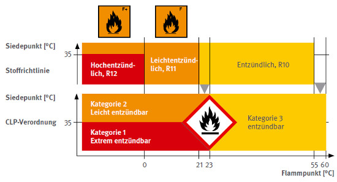
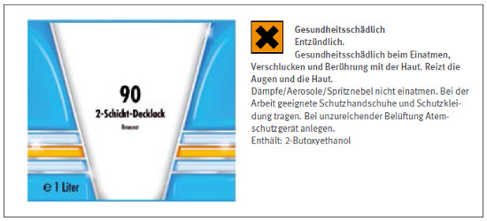
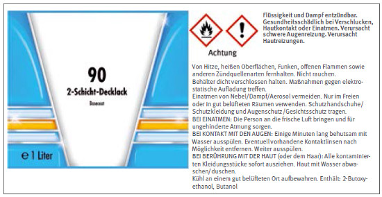
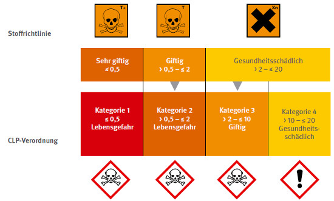
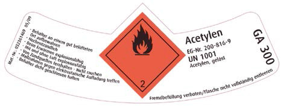
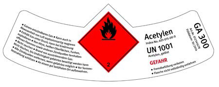
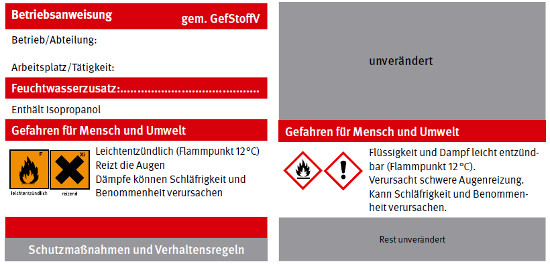
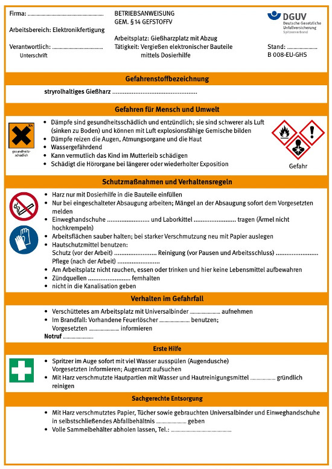
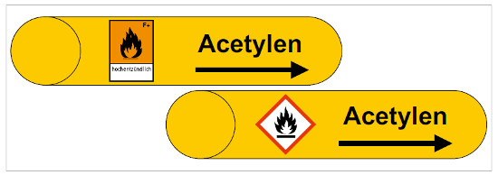

Mit den neuen rechtlichen Grundlagen ändert sich die Einstufung und Kennzeichnung für Stoffe und Gemische. Deren Eigenschaften haben sich zwar nicht geändert, trotzdem ergeben sich Auswirkungen auf Belange des Arbeitsschutzes. Betroffen davon sind u. a.:
In der Bekanntmachung vom 15. Dezember 2008 (IIIb3-35122 – GMBl Nr. 1 S. 13) regelt das Bundesministerium für Arbeit und Soziales (BMAS), dass in der Gefahrstoffverordnung übergangsweise die Bezüge zur Einstufung nach Stoffrichtlinie (RL 67/548/EWG) bzw. Zubereitungsrichtlinie (RL 1999/45/EG) bis zu deren Außerkraftsetzung zum 1. Juni 2015 beibehalten werden. Mit diesem Vorgehen bleibt das bisherige Schutzniveau zunächst unverändert.
Die Bekanntmachung Gefahrstoffe (BekGS) 408 „Anwendung der GefStoffV und der TRGS mit dem Inkrafttreten der CLP-Verordnung“ von Dezember 2009 enthält Hinweise für die praktische Umsetzung der Verordnung in der Übergangsphase bis 2015.
Alle neuen bzw. neugefassten Technischen Regeln für Gefahrstoffe (TRGS) nehmen bereits Bezug auf die Einstufung und Kennzeichnung nach der CLP-Verordnung.
Die Bekanntmachungen und Technischen Regeln für Gefahrstoffe finden sich unter:
→ www.baua.de/de/Themen-von-A-Z/Gefahrstoffe/TRGS/TRGS.html
Für Betriebe ergibt sich demnach Handlungsbedarf, sobald Hersteller/Lieferanten ihre Produkte nach der CLP-Verordnung einstufen, kennzeichnen und liefern.
Die Gefährdungsbeurteilung ist bei bereits eingeführten Produkten zu überprüfen und ggf. anzupassen, sofern Stoffe und Gemische in den Betrieb gelangen, die nach der CLP-Verordnung eingestuft und gekennzeichnet sind.
Anhand des aktuellen Sicherheitsdatenblattes ist zuerst zu prüfen, ob sich die Zusammensetzung oder die Einstufung nach altem Recht im Vergleich zum neuen Recht geändert hat. Gibt es hier und auch in anderen Kapiteln des Sicherheitsdatenblattes keine relevanten Änderungen, kann die bisherige Gefährdungsbeurteilung weiter genutzt werden. Liegen jedoch neue Erkenntnisse zur Stoffbewertung vor, so sind diese bei der Gefährdungsbeurteilung zu berücksichtigen und die Schutzmaßnahmen zu überprüfen. In beiden Fällen ist die Überprüfung zu dokumentieren.
Aufgrund der neuen Einstufungsgrenzen in einzelnen Gefahrenklassen kann es in einigen Fällen zu einer Einstufung in eine Kategorie mit einer höheren Gefährdung kommen. Möglich ist auch eine Einstufung in eine der neuen Gefahrenklassen.
Für die entzündbaren Flüssigkeiten zeigt sich folgendes Bild:

Abb. 6 Alte und neue Einstufungsgrenzen für entzündbare Flüssigkeiten
Für die Praxis bedeutet dies, dass Flüssigkeiten mit einem Flammpunkt zwischen 21 und 23 °C von entzündlich (R10) in die Kategorie 2 – leicht entzündbar – bei einem Siedepunkt > 35 °C bzw. in die Kategorie 1 – extrem entzündbar – bei einem Siedepunkt ≤ 35 °C eingestuft werden. Für Stoffe und Gemische mit einem Flammpunkt zwischen 55 und 60 °C (bisher nicht eingestuft) gilt zukünftig die Zuordnung in die Kategorie 3 – entzündbar.
Ferner besteht nach der CLP-Verordnung für alle entzündbaren Stoffe eine Kennzeichnungspflicht mit dem Gefahrenpiktogramm „Flamme“. Ein Etikett für die Kennzeichnung eines 2-Schicht-Decklackes mit der alten bzw. neuen Kennzeichnung zeigt Abbildung 7 bzw. Abbildung 8.

Abb. 7 Etikett eines 2-Schicht-Decklackes nach der Zubereitungsrichtlinie *

Abb. 8 Etikett eines 2-Schicht-Decklackes nach CLP-Verordnung *
Aufgrund der geänderten Einstufungskriterien für die akut toxischen Eigenschaften wird sich die Anzahl der als giftig oder lebensgefährlich eingestuften Stoffe und Gemische erhöhen.
Die Abbildung 9 zeigt für die inhalative Exposition (Dämpfe), dass bisher gesundheitsschädliche Stoffe mit LC50-Werten > 2 bis ≤ 10 mg/l /4 h nach der CLP-Verordnung als „Akut Toxisch Kategorie 3“ (giftig) eingestuft werden. Weiterhin ergibt sich für bisher giftige Stoffe mit LC50-Werten > 0,5 bis ≤ 2 mg/l/4 h die Einstufung in „Akut Toxisch Kategorie 2“ (Lebensgefahr).
Ein Beispiel hierfür ist Methylacrylat mit einer LC50 von 4,75 mg/l/4 h, das bei inhalativer Exposition nach der Stoffrichtlinie als „Gesundheitsschädlich“, nach der CLP-Verordnung als „Akut Toxisch Kategorie 3, Einatmen“ (Giftig) eingestuft werden muss.

Abb. 9 Einstufungskriterien Akute Toxizität – inhalativ (Dämpfe) – (LC50 in mg/l /4 h)
Das Gefahrstoffverzeichnis muss bezüglich der Einstufung bzw. Kennzeichnung überprüft und entsprechend aktualisiert werden. Es wird empfohlen, während der Übergangszeit die Einstufung sowohl nach dem alten als auch nach dem neuen Recht aufzuführen.
Unterliegt ein Versandstück den Gefahrgut-Transportvorschriften, so wird die äußere Verpackung wie bisher gemäß dieser Vorschriften gekennzeichnet. Ist aber die Versandverpackung gleich der Einzelverpackung wie beispielweise bei einer Gasflasche, so sind auch Kennzeichnungselemente nach der Stoffrichtlinie (siehe Abbildung 10) bzw. CLP-Verordnung (siehe Abbildung 11) anzubringen. Auf Gefahrensymbole bzw. Gefahrenpiktogramme kann verzichtet werden, wenn sie eine Entsprechung im Transportrecht (Gefahrzettel oder Kennzeichen – in diesem Falle die Flamme) haben. Des weiteren kann auf das Gefahrenpiktogramm GHS04 verzichtet werden, wenn das Gefahrenpiktogramm GHS02 oder GHS06 verwendet wird (siehe Abbildung 11).

Abb. 10 Etikett für eine Gasflasche nach Transportrecht und Stoffrichtlinie *

Abb. 11 Etikett für eine Gasflasche nach Transportrecht und CLP-Verordnung *
Grundsätzlich ist es erforderlich, unabhängig von der regelmäßigen, mindestens jährlichen Unterweisung, die betroffenen Mitarbeiter über das neue System zur Einstufung und Kennzeichnung zu informieren. Vorrangig ist es dabei, die neuen Kennzeichnungselemente und die wesentlichen Unterschiede des alten und neuen Systems in verständlicher Weise und abgestimmt auf die betrieblichen Tätigkeiten in angemessenem Umfang zu erläutern. Auch die Inhalte der arbeitsmedizinisch-toxikologischen Beratung müssen geprüft und ggf. angepasst werden.
Eine Anpassung oder Umstellung der Betriebsanweisungen sollte praxisbezogen sein, d. h. eine Umstellung auf die neue Kennzeichnung ist nicht notwendig, solange im Betrieb ausschließlich Produkte mit der alten Kennzeichnung verwendet werden. Die Umstellung sollte erst erfolgen, sobald Produkte mit der neuen Kennzeichnung in den Betrieb kommen, spätestens zum Ende der Übergangsfrist am 1. Juni 2015.
Liegen keine neueren Erkenntnisse vor, die weitergehende Schutzmaßnahmen nach sich ziehen, sind lediglich die Kennzeichnungselemente im Abschnitt „Gefahren für Mensch und Umwelt“ anzupassen (siehe Abbildung 12).

Abb. 12 Neue Gefahrenpiktogramme in einer Betriebsanweisung
Für die Umstellung der Betriebsanweisungen ist kein formaler Weg festgelegt. Da in der Praxis die alte und die neue Kennzeichnung gleichzeitig noch über einen längeren Zeitraum vorkommen können, z. B. aufgrund mehrerer Lieferanten für dasselbe Produkt, kommen für die Übergangsphase folgende Möglichkeiten in Frage:
Die Verwendung von Gruppenbetriebsanweisungen ist nach wie vor möglich.
Bei der Einführung einer geänderten Betriebsanweisung ist eine entsprechende mündliche Unterweisung erforderlich.

Abb. 13 Betriebsanweisung mit alten Gefahrensymbolen und neuen Gefahrenpiktogrammen
Wird innerbetrieblich in kleinere Gebinde umgefüllt, ist grundsätzlich die vollständige Gebindekennzeichnung des Herstellers bzw. Lieferanten zu übernehmen (Bezeichnung des Gefahrstoffes, Gefahrenpiktogramme, Signalwort, Gefahren- und Sicherheitshinweise). Wie bei der Etikettierung von Originalgebinden geht es hier um die Identifizierung der enthaltenen Gefahrstoffe und der davon ausgehenden Gefahren. Bei innerbetrieblicher Kennzeichnung von gefährlichen Stoffen oder Gemischen in Apparaturen, Rohrleitungen, Lagertanks, Laborflaschen o. ä. kann eine vereinfachte Kennzeichnung vorgenommen werden, sofern die beteiligten Arbeitnehmer die damit verbundenen Gefahren und die zu ergreifenden Schutzmaßnahmen aus den am Arbeitsplatz vorhandenen Unterlagen (z. B. Betriebsanweisungen oder Sicherheitsdatenblättern) entnehmen können und diese ihnen bekannt sind.
Nach der TRGS 201 „Einstufung und Kennzeichnung bei Tätigkeiten mit Gefahrstoffen“ ist die Kennzeichnung mit dem Namen des Stoffes oder Gemisches und dem Gefahrensymbol mit der dazugehörigen Gefahrenbezeichnung bzw. dem GHS-Piktogramm ausreichend. Als Beispiel für eine vereinfachte Kennzeichnung nach TRGS 201 zeigt Abbildung 14 eine Rohrleitung einmal mit altem Gefahrensymbol und zum anderen mit neuem Gefahrenpiktogramm. Ist bei einer vereinfachten Kennzeichnung die Aussagekraft der Gefahrenpiktogramme zu unspezifisch um die Gefahr zu beschreiben, kann es erforderlich sein, die Gefahrenhinweise oder andere Kurzinformationen z. B. Gefahrenklassen zu ergänzen. In Laboratorien hat sich das Kennzeichnungskonzept des Fachbereichs Rohstoffe und chemische Industrie bewährt.
→ http://www.bgrci.de/fachwissen-portal/start/laboratorien/laborrichtlinien/vereinfachtes-kennzeichnungssystem/

Abb. 14 Beschriftung von Rohrleitungen
Da in der GefStoffV die Bezüge zur Stoffrichtlinie bis 2015 erhalten bleiben, ist in diesem Zeitraum eine Kennzeichnung nach diesem System grundsätzlich zulässig. Je nach innerbetrieblichem Informationsstand kann aber eine frühere Umzeichnung erfolgen, spätestens aber nach dem Ablauf der Übergangsfrist.
Eine gleichzeitige Kennzeichnung von Behältnissen oder Rohrleitungen mit alten und neuen Kennzeichnungselementen ist zu vermeiden!
Weitere Einzelheiten zur innerbetrieblichen Kennzeichnung sind in der TRGS 201 „Einstufung und Kennzeichnung bei Tätigkeiten mit Gefahrstoffen“ und in der Technischen Regel für Arbeitsstätten (ASR) A1.3 „Sicherheits- und Gesundheitsschutzkennzeichnung“ festgelegt.